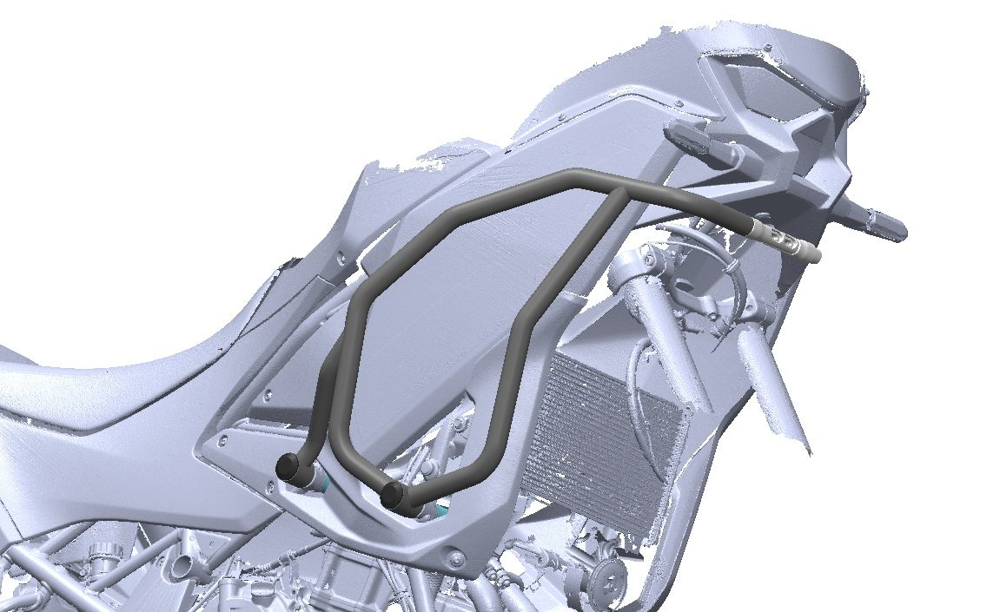
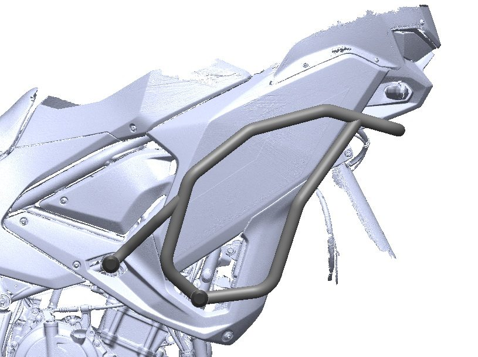
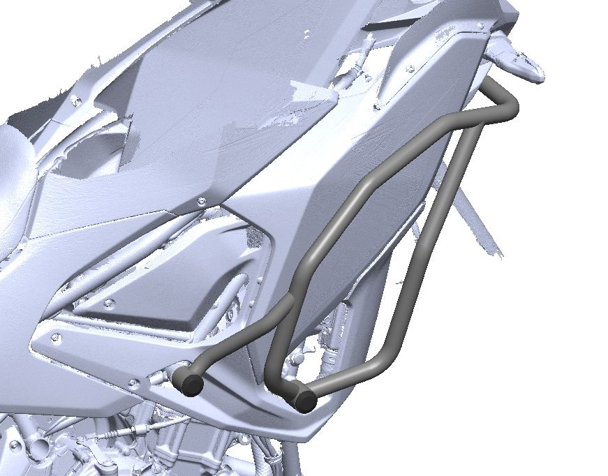
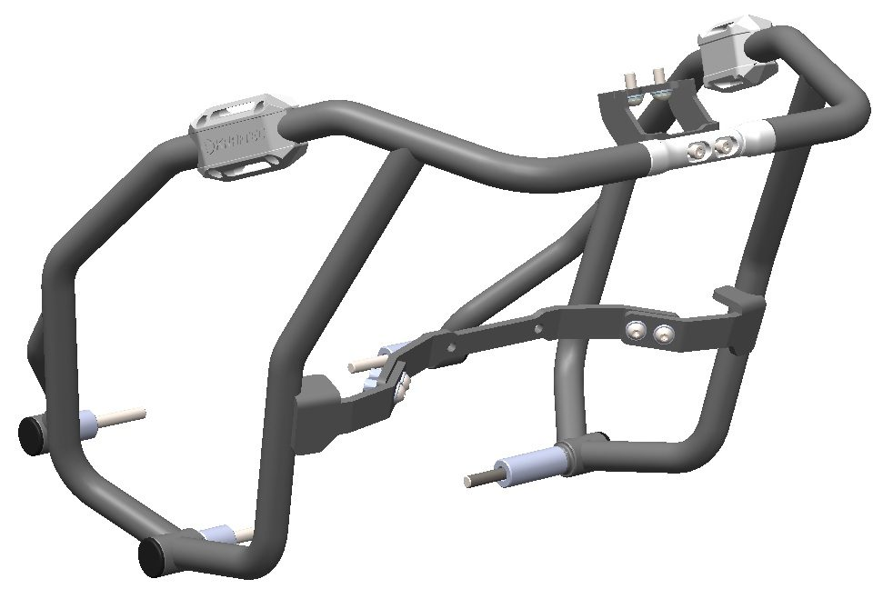
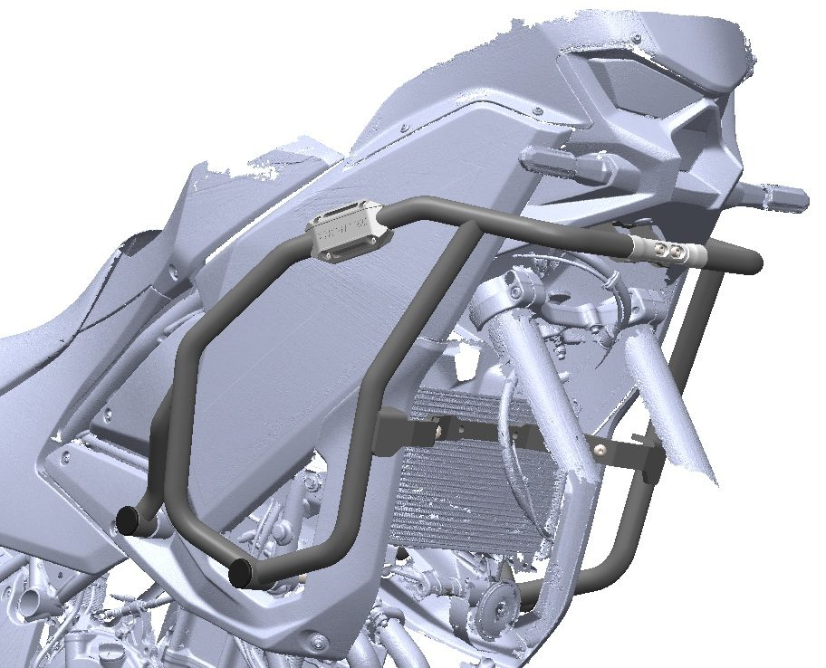
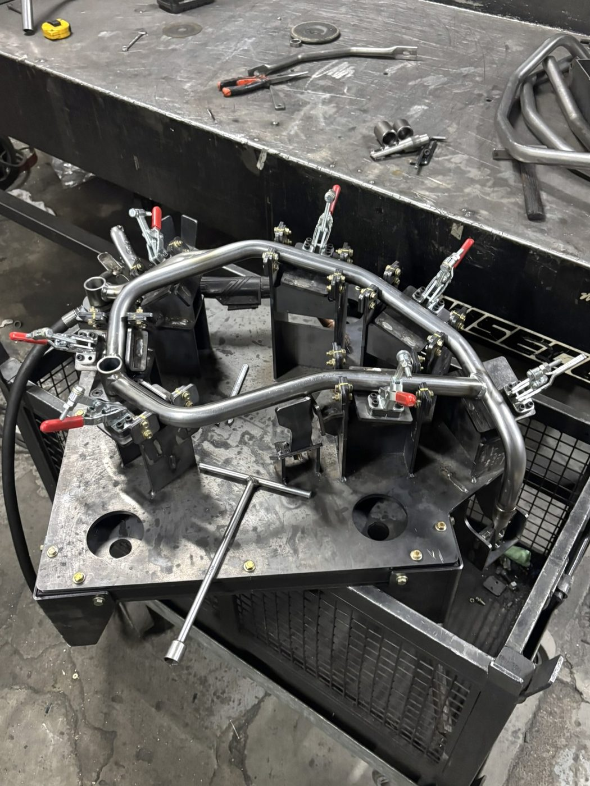
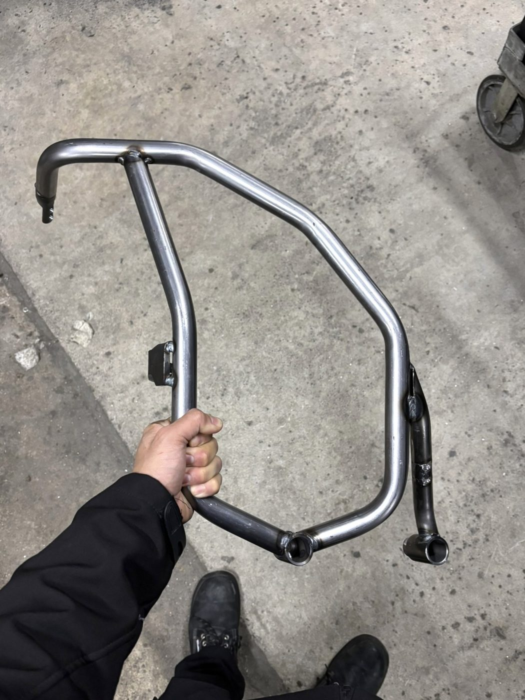
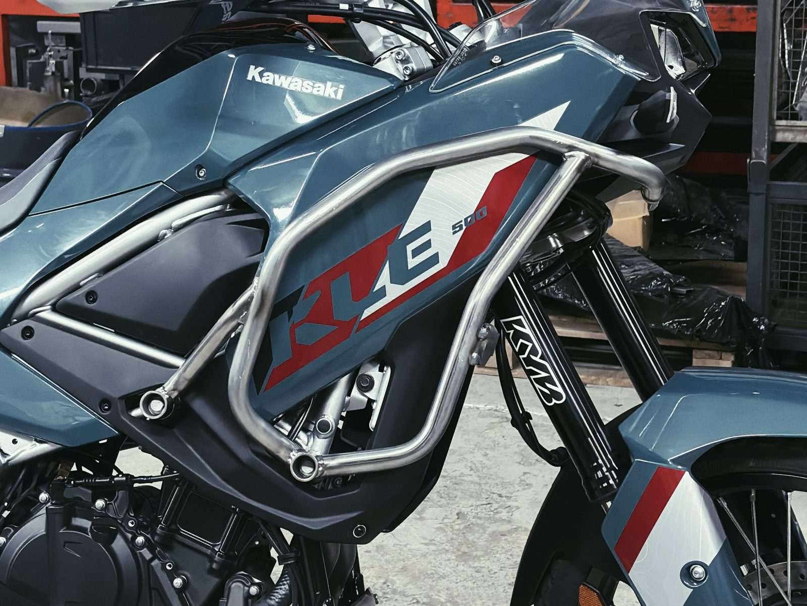
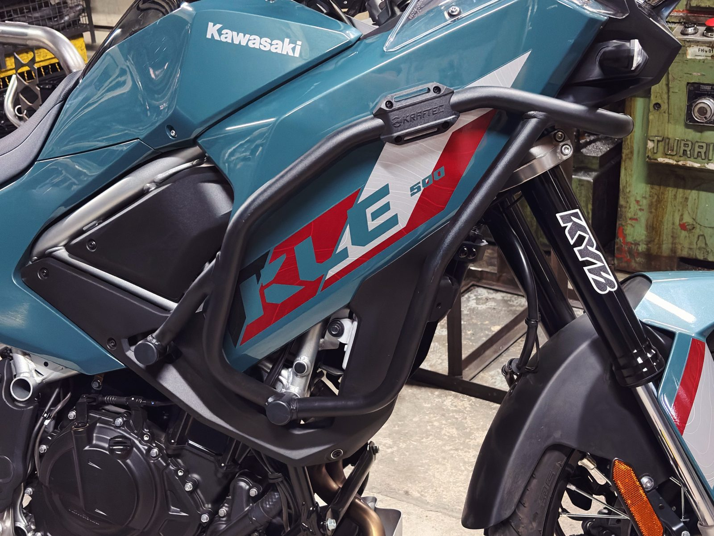
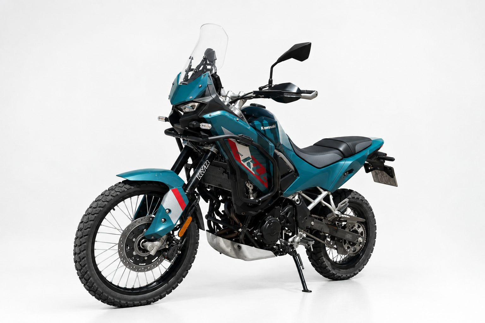

Proyecto 01 · Kawasaki · Integración OEMProject 01 · Kawasaki · OEM integration
Defensa KLE 500 SEKLE 500 SE crash bar
Defensa diseñada y desarrollada para la Kawasaki KLE 500 SE. Se monta en la línea de ensamblaje OEM como accesorio de fábrica, y tiene una versión aftermarket para las motos que ya están en la calle. Partiendo de un escaneo 3D de la moto, la geometría se refinó de forma iterativa, con el curvado de tubo y la soldadura guiando las decisiones clave.
Crash bar designed and developed for the Kawasaki KLE 500 SE. It is fitted on the OEM assembly line as a factory accessory, with a parallel aftermarket version for bikes already on the road. Working from a 3D scan of the motorcycle, the geometry was refined iteratively, with tube bending and welding constraints driving key decisions.
Sobre el escaneo 3DBuilt on a 3D scan
La defensa se diseñó directamente sobre el escaneo de la moto. Cada iteración de geometría se probó contra los carenados, el radiador y los puntos de anclaje originales antes de pasar a la siguiente.
The crash bar was designed directly on the bike's scan. Each geometry iteration was checked against the fairings, radiator and original mounting points before moving on.



Integración estructuralStructural integration
La estructura es de tubo de acero SAE 1010 de Ø25,4 × 2 mm, curvado y soldado en un conjunto continuo que sigue la arquitectura del chasis y se ancla a los puntos de montaje originales. Una barra central cierra el camino de carga entre los dos lados: reparte los impactos y le da al conjunto su rigidez final.
The structure is built from Ø25.4 × 2 mm SAE 1010 steel tube, bent and welded into a continuous assembly that follows the frame architecture and anchors to the OEM mounting points. A central bar closes the load path between both sides, spreading impact loads and giving the assembly its final rigidity.


Validada con el herramental de serieValidated on production tooling
El conjunto final se validó en un dispositivo de soldadura dedicado: el mismo herramental que se usa en la producción en serie, no un montaje de prototipo. Después se verificaron calce, rigidez y camino de carga directamente sobre la moto, confirmando los anclajes y la geometría contra el chasis original.
The final assembly was validated on a dedicated welding fixture: the same tooling used for series production, not a one-off prototype setup. Fit, rigidity and load path were then checked directly on the bike, confirming mounting points and geometry against the OEM frame.




Parte de la motoPart of the bike
El resultado es una estructura liviana y durable que se lee como parte de la moto, no como algo agregado. El recorrido de los tubos acompaña tan de cerca las líneas del tanque y del cubre radiador que enmarca la calcomanía del modelo en lugar de taparla, y deja la gráfica de fábrica a la vista.
The result is a lightweight, durable structure that reads as part of the bike, not bolted on. Tube routing follows the tank and radiator shroud lines closely enough to frame the model decal rather than cover it, keeping the KLE 500's factory graphics fully visible.
